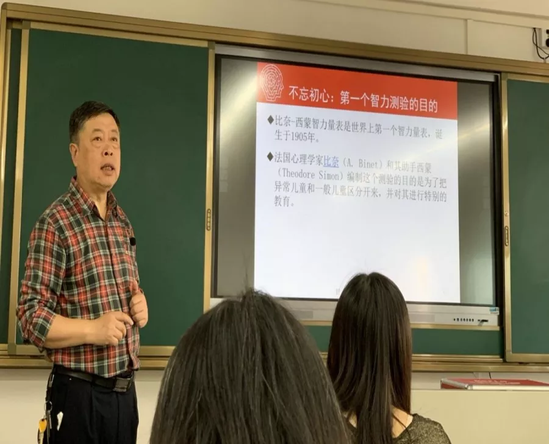
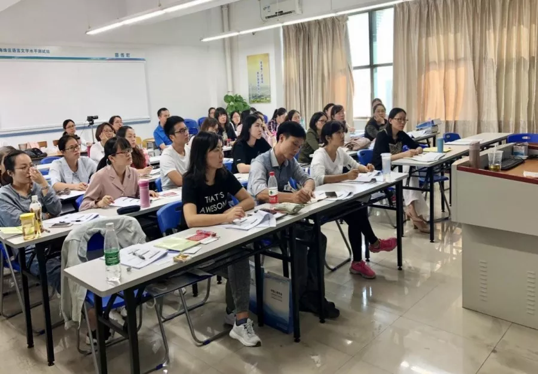
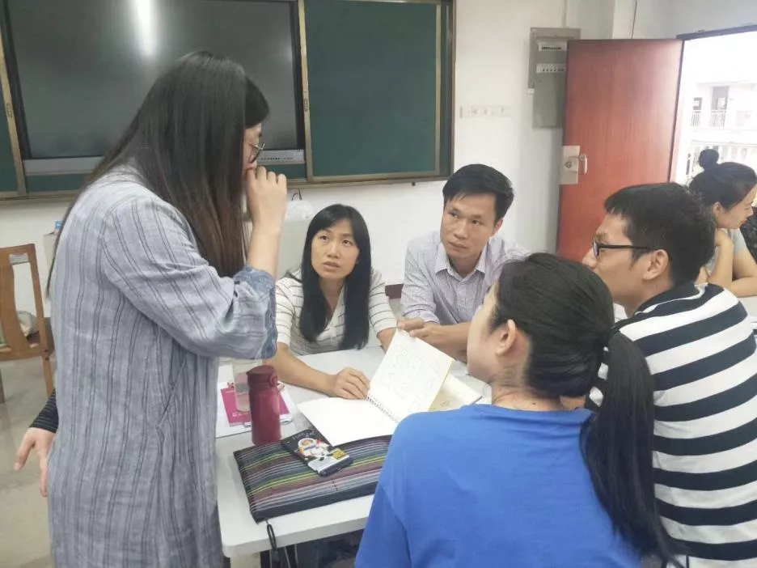
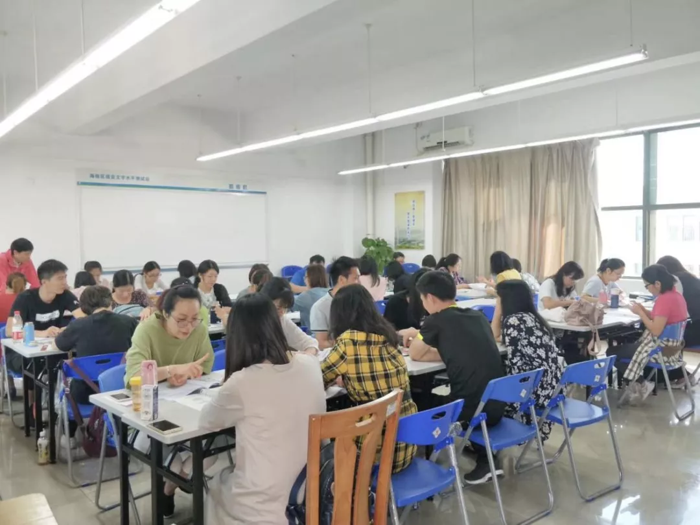

资讯> 专业水平与人文关怀并重的特殊教育评估—2019年海珠区特殊教育评估教师团队专项研训活动
专业水平与人文关怀并重的特殊教育评估—2019年海珠区特殊教育评估教师团队专项研训活动
专业水平与人文关怀并重的特殊教育评估—2019年海珠区特殊教育评估教师团队专项研训活动
专业水平与人文关怀并重的特殊教育评估 ——2019年海珠区特殊教育评估教师团队专项研训活动
为贯彻落实《海珠区第二期特殊教育提升计划实施方案（2018-2020）》中“探索培养本区专业的特殊教育评估教师团队”要求，我区已于2018年组建了一支50人左右的多专业背景的特殊教育评估教师团队。为进一步提高该团队的专业化水平，海珠区教育发展中心于11月初举办了为期三天的特教评估专项研训活动。
本次专项研训的主题为“非言语认知能力临床评估技术实操”，海珠区教育发展中心邀请了北京联合大学特殊教育学院原院长、中国残疾人康复协会副理事长许家成教授和韦氏资深测评师、实操讲师周辰老师担任主讲老师。本次研训的重点内容是学习《斯—欧非言语智力测验（6-40岁）中国版》。
11月1日上午，许家成教授向评估教师们介绍了该测验工具的发展历史、测验的修订、测验内容和特点。下午，周辰老师讲授了测验的具体内容和指导语的使用。
许家成教授介绍测验的发展历史:
11月2日上午，许教授重点介绍了心理测验工作者的职业道德以及施测需要取得相应测验资格证书等。下午，周老师对斯-欧非言语智力测验的施测通则和记分指导进行了详细介绍。
特教评估教师团队认真学习
11月3日上午，38位老师进行分组实操。三个人为一组，一位主试，一位被试，一位观察员，老师们在不同角色中轮流操练加深对原理和方法的理解。周老师则进行巡堂指导和集体答疑。下午，所有老师参加了斯-欧非言语智力测验主试资格认证考试。最后，周老师介绍了测验分数解释、结果报告、案例分析及计分系统操作。
周辰老师为老师们答疑解惑
特教评估教师们进行模拟练习
本次专项研训，不仅让我区特殊教育评估教师团队掌握一项新的标准化测量工具的实操技术及获得主试资格，还进一步促进我区特殊教育转介评估安置工作向着专业化、规范化的方向发展。
许家成教授、周辰老师与评估团队教师合影留念